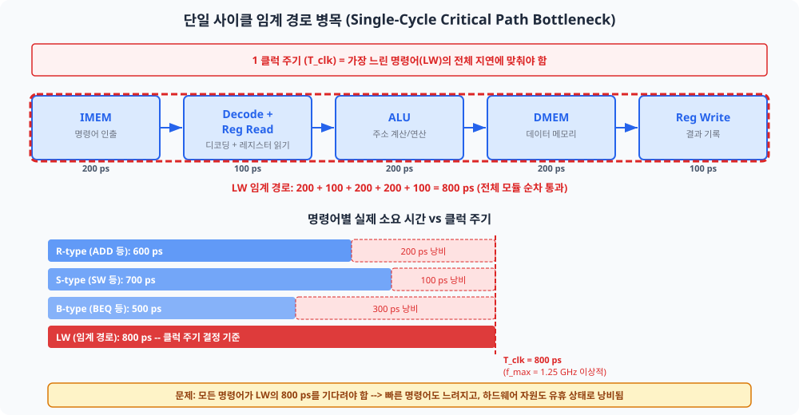
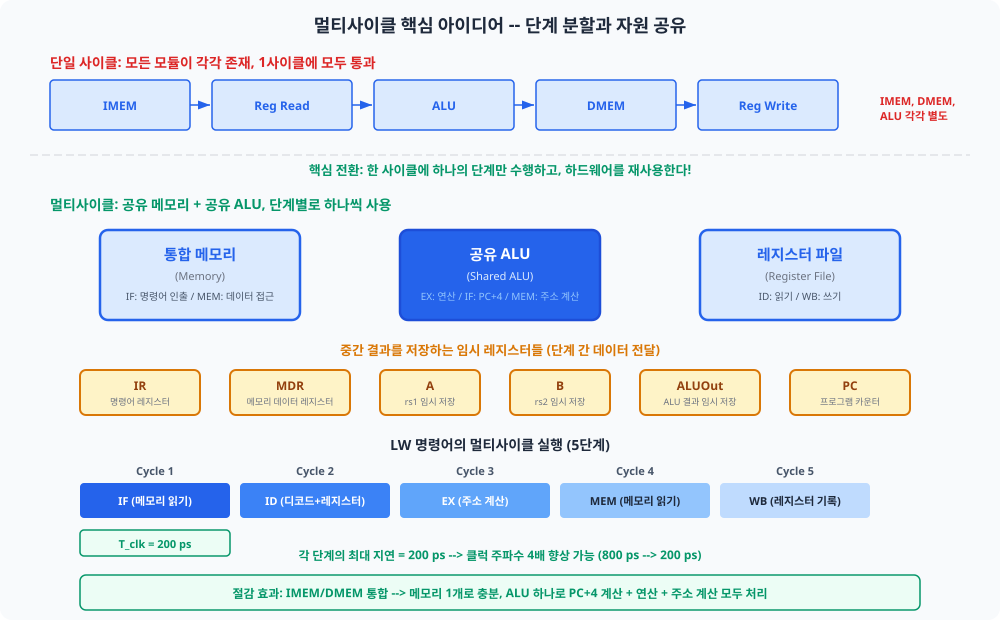
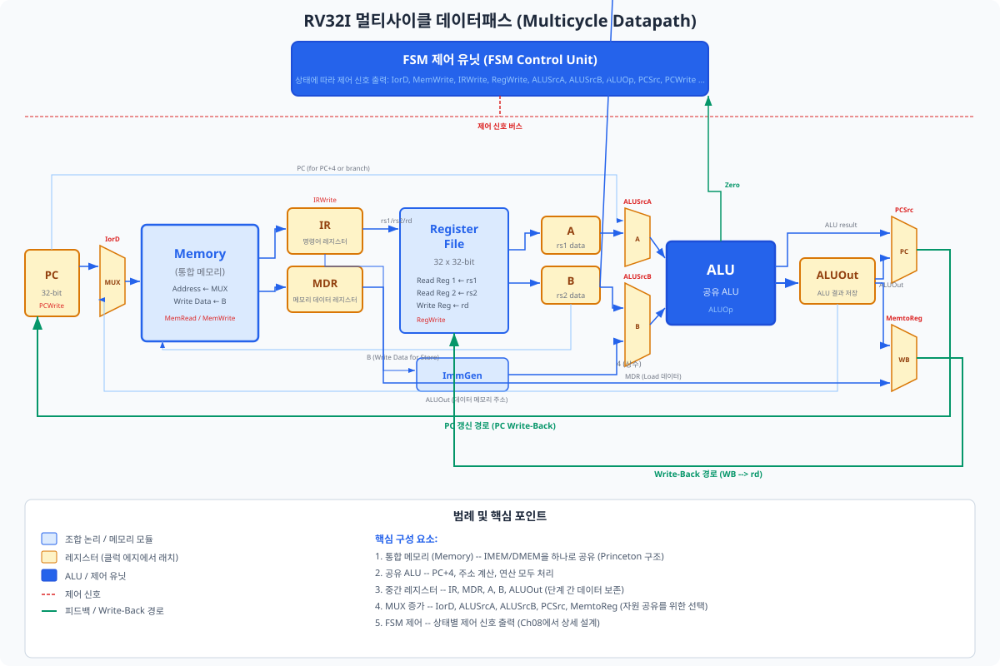
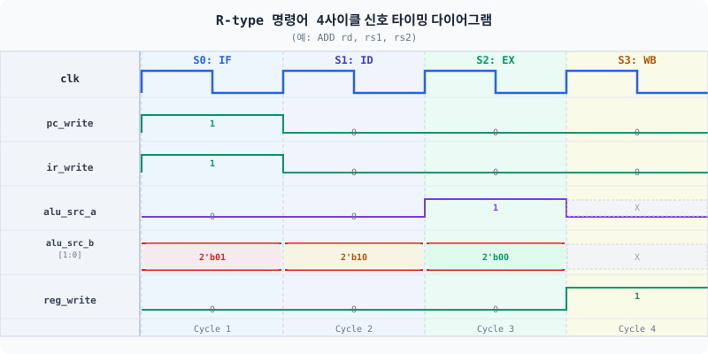
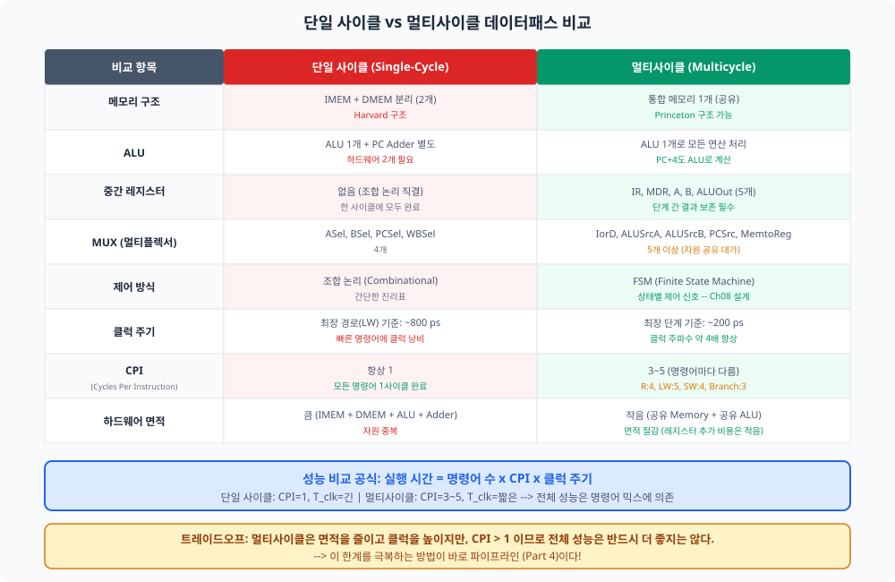

Ch06에서 완성한 단일 사이클 CPU는 "가장 느린 명령어"의 속도에 모든 명령어가 발목을 잡히는 근본적 한계를 지닙니다. 이 챕터에서는 하나의 명령어 실행을 여러 사이클로 분할하고 하드웨어 자원을 공유하는 멀티사이클(Multicycle) 구조를 설계합니다. 데이터패스에 IR, MDR, A, B, ALUOut이라는 다섯 개의 중간 레지스터를 추가하여 사이클 경계에서 데이터를 안전하게 보존하는 원리를 배웁니다.
Ch06의 마지막 페이지를 떠올려 보십시오. Vivado의 타이밍 보고서가 화면에 떴을 때, 여러분의 CPU는 약 25~30 MHz에서 동작하고 있었습니다. "왜 이렇게 느린가?"라는 의문을 가졌다면, 그 직관은 정확합니다. 단일 사이클 CPU의 클럭 주기는 가장 복잡한 명령어 — LW — 가 거치는 모든 단계의 지연을 더한 값으로 결정됩니다. ADD 명령어처럼 빠른 명령어도 LW와 동일한 긴 사이클을 기다려야 합니다.
이 챕터에서 우리는 그 비효율을 해결하기 위한 첫 번째 전략, 멀티사이클 구조를 배웁니다. 핵심 아이디어는 두 가지입니다: 명령어 실행을 여러 사이클로 분할하고, 각 사이클마다 동일한 하드웨어 자원을 재사용합니다. 이를 위해 사이클 경계마다 데이터를 보존하는 중간 레지스터가 추가됩니다. 이 다섯 개의 레지스터가 이 챕터의 주인공입니다.
여러분이 Ch06에서 측정한 단일 사이클 CPU는 약 25~30 MHz에서 동작했습니다. 이론적으로 FPGA 내부 조합 논리 지연만 고려하면 훨씬 높은 주파수가 가능할 것 같지만, 실제 타이밍 보고서는 그렇지 않았습니다. 그 이유는 바로 임계 경로(Critical Path)에 있습니다.
디지털 회로에서 임계 경로란 조합 논리 블록들을 거쳐 플립플롭에 도달하는 경로 중 전파 지연(Propagation Delay)이 가장 긴 경로입니다. 클럭 주기는 이 임계 경로의 지연보다 반드시 길어야 합니다. 즉, 가장 느린 경로 하나가 전체 CPU의 동작 속도를 결정합니다.
단일 사이클 CPU에서 임계 경로는 LW 명령어가 지나는 경로입니다: 명령어 메모리 → 디코더+레지스터 파일 읽기 → ALU(주소 계산) → 데이터 메모리 → 레지스터 파일 쓰기. 이 경로의 총 지연이 T_clk(클럭 주기)의 하한을 결정합니다.

아래 표는 RV32I 주요 명령어 타입별로 실제 필요한 하드웨어 단계와 예상 지연을 보여줍니다. 단일 사이클에서는 모든 명령어가 LW의 800 ps를 기다려야 합니다.
| 명령어 타입 | 거치는 단계 | 실제 필요 지연 (예시) | 단일 사이클 클럭 (T_clk) | 낭비 시간 |
|---|---|---|---|---|
| R-type (ADD, SUB 등) | IMEM → Decode/RegR → ALU → RegW | ~600 ps | 800 ps | 200 ps |
| S-type (SW) | IMEM → Decode/RegR → ALU → DMEM | ~700 ps | 800 ps | 100 ps |
| B-type (BEQ) | IMEM → Decode/RegR → ALU(비교) | ~500 ps | 800 ps | 300 ps |
| LW (임계 경로) | IMEM → Decode/RegR → ALU → DMEM → RegW | ~800 ps | 800 ps | 0 ps |
단일 사이클 CPU의 비효율은 두 가지 측면에서 발생합니다.
① 클럭 낭비: ADD 명령어는 600 ps면 충분하지만, 800 ps짜리 클럭을 기다립니다. 이 200 ps 동안 ALU, 레지스터 파일 등의 하드웨어는 유휴(idle) 상태입니다. 전체 실행 시간의 25%가 허비됩니다.
② 하드웨어 자원 낭비: 단일 사이클에서는 명령어 메모리(IMEM)와 데이터 메모리(DMEM)가 물리적으로 분리되어야 합니다. LW 명령어는 같은 사이클 안에 명령어를 읽고 데이터도 읽어야 하기 때문입니다. 그러나 이 두 메모리가 동시에 접근되는 명령어는 LW/SW뿐입니다. 나머지 명령어들은 하나의 메모리 포트만 사용합니다. 즉, 한쪽 메모리가 항상 쉬고 있습니다.
단일 사이클의 비효율을 해결하는 아이디어는 직관적입니다: 긴 작업을 짧은 단계들로 나누고, 각 단계에서 동일한 도구를 재사용하면 된다. 이를 레스토랑 비유로 시작하여 하드웨어 용어로 전환해 설명하겠습니다.
단일 사이클 CPU를 "모든 요리를 한 번에 만드는 요리사"로 비유해 봅시다. 전채, 수프, 메인, 디저트를 한 접시에 동시에 조리합니다. 가장 오래 걸리는 메인 요리가 완성될 때까지 모든 스테이션이 기다려야 합니다.
한계: 수프 스테이션은 메인 요리가 완성될 때까지 놀고 있고, 오븐(디저트용)도 메인 요리가 오기 전까지 비어 있습니다.
멀티사이클 해법: 이제 요리를 코스별로 순서대로 제공합니다. 전채 → 수프 → 메인 → 디저트. 각 코스마다 같은 냄비, 같은 오븐, 같은 칼을 재사용합니다. 별도 장비가 필요 없습니다 — 공용 장비 작업실입니다.
하드웨어로 돌아오면: 명령어 실행을 IF → ID → EX → MEM → WB 단계로 분할하고, 각 단계에서 하나의 ALU, 하나의 메모리를 재사용합니다.
⚠ 파이프라인과의 혼동 주의: 이 비유에는 중요한 한계가 있습니다. 코스 요리에서 요리사는 한 번에 한 손님의 요리만 진행합니다. 즉, 한 명령어를 완전히 완료한 후에 다음 명령어를 시작합니다. 이것이 멀티사이클의 방식입니다. Chapter 09에서 배울 파이프라인(Pipeline)은 다릅니다 — 여러 명령어를 동시에 서로 다른 단계에서 처리합니다. 마치 여러 손님의 요리를 각각 다른 조리 단계에서 동시 진행하는 것과 같습니다. 지금은 멀티사이클(한 번에 하나의 명령어)에 집중합니다.
멀티사이클 CPU는 명령어 실행을 최대 5단계로 분할합니다. 각 단계는 정확히 1 클럭 사이클을 소모합니다. 명령어 타입에 따라 필요하지 않은 단계는 건너뜁니다.
| 단계 | 약칭 | 수행 작업 |
|---|---|---|
| 명령어 인출 (Instruction Fetch) | IF | PC가 가리키는 메모리 주소에서 명령어를 읽고 IR에 저장, PC ← PC+4 |
| 명령어 해독 / 레지스터 읽기 (Instruction Decode) | ID | IR에서 opcode/rs1/rs2/rd 추출, 레지스터 파일 읽기, A/B 레지스터 갱신 |
| 실행 (Execution) | EX | ALU로 연산 또는 주소 계산, 결과를 ALUOut 레지스터에 저장 |
| 메모리 접근 (Memory Access) | MEM | LW: 메모리 읽기 후 MDR 저장 / SW: 메모리 쓰기 / Branch: PC 갱신 |
| 결과 기록 (Write-Back) | WB | 레지스터 파일에 결과 기록 (ALUOut 또는 MDR) |
모든 명령어가 5단계를 모두 거치는 것은 아닙니다. 필요한 단계만 실행하므로 빠른 명령어는 사이클을 절약합니다.
| 명령어 타입 | IF | ID | EX | MEM | WB | 총 사이클 수 |
|---|---|---|---|---|---|---|
| R-type (ADD, SUB, AND 등) | ✓ | ✓ | ✓ | — | ✓ | 4 |
| I-type 연산 (ADDI, ANDI 등) | ✓ | ✓ | ✓ | — | ✓ | 4 |
| Load (LW) | ✓ | ✓ | ✓ | ✓ | ✓ | 5 |
| Store (SW) | ✓ | ✓ | ✓ | ✓ | — | 4 |
| Branch (BEQ, BNE 등) | ✓ | ✓ | ✓ | — | — | 3 |
단일 사이클은 IF 단계와 MEM 단계가 같은 사이클에 발생하므로 두 개의 분리된 메모리(IMEM/DMEM)가 필요했습니다. 멀티사이클에서는 IF와 MEM이 서로 다른 사이클에 발생합니다. 따라서 명령어와 데이터를 하나의 통합 메모리(Unified Memory)로 처리할 수 있습니다. 이를 폰 노이만(Von Neumann) 또는 프린스턴(Princeton) 구조라 부릅니다. Ch05에서 배운 하버드(Harvard) 구조(분리 메모리)와 대비됩니다.

아래는 Princeton 구조 통합 메모리의 최소 구현입니다.
멀티사이클 데이터패스 전체 코드(ch07_multicycle_datapath.sv)에 인라인으로 포함되어 있지만,
개념 이해를 위해 독립 모듈로 분리하여 살펴봅니다.
// 통합 메모리 핵심 구조 (ch07_sec02_unified_memory.sv 발췌)
// 16KB (4K 워드) — 명령어와 데이터를 하나의 배열로 처리
logic [31:0] mem [0:4095];
initial begin
$readmemh("program.hex", mem); // 프로그램 이미지 적재
end
// 동기 읽기 — IF 단계(명령어)와 MEM 단계(데이터)가 같은 포트 사용
always_ff @(posedge clk) begin
if (mem_read)
read_data <= mem[addr[13:2]]; // 워드 정렬: 하위 2비트 무시
end
// 동기 쓰기 (바이트 인에이블)
always_ff @(posedge clk) begin
if (mem_write) begin
if (byte_enable[3]) mem[addr[13:2]][31:24] <= write_data[31:24];
if (byte_enable[2]) mem[addr[13:2]][23:16] <= write_data[23:16];
if (byte_enable[1]) mem[addr[13:2]][15:8] <= write_data[15:8];
if (byte_enable[0]) mem[addr[13:2]][7:0] <= write_data[7:0];
end
end이제 실제 SystemVerilog 구현으로 들어갑니다. 멀티사이클 데이터패스는 Ch06의 단일 사이클 데이터패스에서 중간 레지스터 5종과 공유 MUX를 추가하고, 분리된 IMEM/DMEM을 하나의 통합 메모리로 교체한 구조입니다.
아래 표는 Ch06 단일 사이클 데이터패스와 비교하여 무엇이 추가·변경·유지되었는지 요약합니다.
| 구분 | 항목 | 설명 |
|---|---|---|
| 추가 | IR (명령어 레지스터) | 인출된 명령어를 이후 사이클에서도 유지 |
| 추가 | MDR (메모리 데이터 레지스터) | 메모리 읽기 결과를 WB 단계까지 보존 |
| 추가 | A/B 레지스터 | 레지스터 파일 출력을 EX 단계까지 보존 |
| 추가 | ALUOut 레지스터 | ALU 연산 결과를 MEM/WB 단계까지 보존 |
| 변경 | IMEM + DMEM → 통합 메모리 | Princeton 구조로 메모리 통합, IorD MUX 추가 |
| 변경 | ALUSrcA: 1비트 MUX | 0=PC, 1=A 레지스터 (단일 사이클은 항상 레지스터) |
| 변경 | ALUSrcB: 2비트 MUX | 00=B, 01=4, 10=imm (PC+4와 분기 주소 계산 공유) |
| 유지 | 레지스터 파일, ALU, 즉치수 생성기 | 구조 동일, 입력 소스만 변경 |
단일 사이클에서는 명령어 메모리(IMEM)가 조합 논리로 구현되어 매 사이클 즉시 명령어를 출력했습니다. 멀티사이클에서는 통합 메모리가 동기 읽기이므로, 명령어는 IF 사이클이 끝난 후 다음 클럭 에지에 유효해집니다. IF 다음에 오는 ID, EX, WB 단계에서도 동일한 명령어를 사용해야 하므로, IR 레지스터에 인출된 명령어를 보존합니다.
IR은 ir_write 신호가 1일 때만 갱신됩니다 (IF 단계).
이후 사이클에서 ir_write = 0이 되면 IR은 값을 유지합니다.
이를 통해 ID~WB 단계에서 ir_reg[19:15](rs1), ir_reg[24:20](rs2),
ir_reg[11:7](rd) 등의 명령어 필드를 안전하게 참조할 수 있습니다.
레지스터 파일은 ID 단계에서 읽힙니다. 읽은 결과(rs1, rs2 데이터)는 EX 단계에서 ALU 입력으로 사용됩니다. 그런데 EX 단계가 시작되면 FSM이 다른 상태로 전환되어 레지스터 파일 주소가 바뀔 수 있습니다. 이를 방지하기 위해 A 레지스터(rs1 보존)와 B 레지스터(rs2 보존)를 사용합니다.
// 중간 레지스터 핵심 구현 (ch07_sec03_intermediate_regs.sv 발췌)
// IR (명령어 레지스터) — ir_write 인에이블, 리셋 시 NOP
always_ff @(posedge clk or negedge rst_n) begin
if (!rst_n)
ir_reg <= 32'h0000_0013; // NOP (ADDI x0, x0, 0)
else if (ir_write)
ir_reg <= mem_data_out; // IF 단계에서만 갱신
end
// A 레지스터 — ID 단계 rs1 데이터 보존
always_ff @(posedge clk or negedge rst_n) begin
if (!rst_n)
a_reg <= 32'd0;
else
a_reg <= rs1_data; // 매 사이클 갱신 (ID → EX 경계에서 사용)
end
// B 레지스터 — ID 단계 rs2 데이터 보존 (EX ALU 입력 또는 SW 쓰기 데이터)
always_ff @(posedge clk or negedge rst_n) begin
if (!rst_n)
b_reg <= 32'd0;
else
b_reg <= rs2_data;
endEX 단계에서 ALU가 계산한 결과(예: 메모리 주소, 연산 결과)는 MEM 또는 WB 단계에서 사용됩니다. EX 단계가 끝나면 ALU 입력 MUX가 변경될 수 있으므로, ALU 결과를 ALUOut 레지스터에 보존합니다.
PC 소스 MUX(PCSrc)는 pc_src 신호로 세 가지 값 중 하나를 선택합니다:
2'b00: alu_result 직접 — IF 단계의 PC+4 계산 시 즉시 사용2'b01: alu_out_reg — EX 단계에서 계산된 분기 목표 주소2'b10: [Ch08 검토 예정 — 주의]
RV32I JAL은 PC-relative 주소(PC+imm_J)이므로, EX 단계에서 ALU가 PC+imm_J를 계산하여
ALUOut에 저장한 후 pc_src=2'b01을 사용합니다.
현재 코드의 2'b10 케이스는 MIPS J-type 방식({alu_out_reg[31:28], ir_reg[25:0], 2'b00})으로
구현되어 있으며, RV32I JAL 스펙과 일치하지 않습니다.
Ch08 FSM 설계 시 수정 예정입니다. 이 케이스를 그대로 FSM에 연결하지 마십시오.
LW 명령어의 MEM 단계에서 통합 메모리가 데이터를 읽어 출력합니다. 그러나 메모리 읽기가 동기 방식이므로, 읽기 결과는 MEM 사이클의 클럭 에지 이후에 유효해집니다. 즉, WB 단계가 시작될 때 비로소 데이터가 준비됩니다. 이 데이터를 WB 단계에서 레지스터 파일에 기록하려면 MDR(Memory Data Register)에 한 사이클 동안 보존해야 합니다.
MDR는 ir_write처럼 인에이블 신호가 없습니다.
매 사이클 mdr_reg <= mem_data_out;으로 무조건 갱신됩니다.
이 방식이 올바르게 동작하는 이유를 정확히 이해해야 합니다.
mem_data_out은 always_ff로 구동되는 동기 레지스터 출력입니다.
mem_read=0인 사이클에서 mem_data_out은 마지막 읽기 결과를 유지합니다.
따라서 LW의 MEM 단계(사이클 4) 클럭 에지에서 MDR가 로드 데이터로 갱신되고,
WB 단계(사이클 5)에서 mem_read=0이므로 mem_data_out은
MEM 단계 결과를 유지하여 MDR가 같은 값으로 재갱신됩니다.
결과적으로 WB 단계에서 MDR는 올바른 로드 데이터를 보유하고 있습니다.
단, 이 방식은 FSM이 IF 단계와 MEM 단계를 명확히 분리한다는 전제에 의존합니다.
IF 단계에서 MDR가 명령어 코드로 갱신되더라도, WB 단계에서는 MEM 단계 클럭 에지 이후의
mem_data_out 값이 이미 저장되어 있으므로 기능적으로 올바르게 동작합니다.
Ch08에서 FSM을 설계할 때 mem_read 제어 신호를 IF와 MEM 단계에만
assert하도록 구현해야 이 동작이 보장됩니다.
// MDR — 매 사이클 무조건 갱신 (인에이블 불필요)
// MEM 단계: mem_data_out에 로드 데이터가 유효
// WB 단계: mdr_reg를 레지스터 파일에 기록
always_ff @(posedge clk) begin
mdr_reg <= mem_data_out; // 매 클럭 에지에 메모리 출력 래치
end
단일 포트 통합 메모리에 접근할 때 두 가지 주소가 사용됩니다:
IF 단계에서는 PC가 명령어 주소를 제공하고,
MEM 단계에서는 EX에서 계산된 ALUOut이 데이터 주소를 제공합니다.
IorD MUX(i_or_d 신호)가 두 주소 중 하나를 선택합니다:
i_or_d = 0: pc_reg → 명령어 인출 (IF 단계)i_or_d = 1: alu_out_reg → 데이터 접근 (MEM 단계)// IorD MUX (ch07_multicycle_datapath.sv 발췌)
assign mem_addr = i_or_d ? alu_out_reg : pc_reg;멀티사이클에서 단일 ALU가 여러 용도로 재사용됩니다: IF 단계에서는 PC+4를 계산하고, EX 단계에서는 레지스터 연산을 수행하며, 분기 명령어에서는 분기 주소를 계산합니다. 이를 위해 ALU 입력 MUX가 단일 사이클보다 더 많은 선택지를 가집니다.
| 신호 | 값 | ALU 입력 소스 | 사용 단계 |
|---|---|---|---|
alu_src_a |
0 | PC 레지스터 | IF (PC+4), EX (분기 주소: PC+offset) |
| 1 | A 레지스터 (rs1) | EX (레지스터 연산) | |
alu_src_b[1:0] |
2'b00 | B 레지스터 (rs2) | EX (R-type 연산) |
| 2'b01 | 상수 4 | IF (PC ← PC+4) | |
| 2'b10 | 즉치수 (imm_ext) | EX (I-type, S-type, 분기 주소) |
LW 명령어 lw rd, imm(rs1)이 어떻게 5사이클을 거치는지 단계별로 추적합니다.
| 사이클 | 단계 | 주요 동작 | 핵심 제어 신호 |
|---|---|---|---|
| 1 | IF | 메모리[PC] → IR, PC ← PC+4 | ir_write=1, pc_write=1, alu_src_b=01, pc_src=00 |
| 2 | ID | IR 디코딩, 레지스터 읽기 → A(rs1), B(rs2) | (레지스터 파일 비동기 읽기, A/B 자동 래치) |
| 3 | EX | A + imm_ext → ALUOut (로드 주소 계산) | alu_src_a=1, alu_src_b=10, alu_op=ADD |
| 4 | MEM | 메모리[ALUOut] 읽기 → MDR | i_or_d=1, mem_read=1 |
| 5 | WB | MDR → 레지스터 파일[rd] | reg_write=1, mem_to_reg=01 |

아래는 ch07_multicycle_datapath.sv의 주요 부분입니다.
포트 선언, PC 로직, 레지스터 파일, ALU만 발췌합니다.
완전한 코드는 챕터 말미의 "전체 소스 코드" 절을 참조하십시오.
// ===== 모듈 포트 (ch07_multicycle_datapath.sv 발췌) =====
module multicycle_datapath (
input logic clk, rst_n,
// 제어 신호 (Ch08 FSM에서 공급)
input logic pc_write, pc_write_cond, i_or_d,
input logic mem_read, mem_write, ir_write, reg_write,
input logic [1:0] reg_dst, mem_to_reg, // reg_dst: 향후 확장 예약 (현재 미사용)
input logic alu_src_a,
input logic [1:0] alu_src_b,
input logic [3:0] alu_op,
input logic [1:0] pc_src,
// 상태 출력 (FSM으로 전달)
output logic [6:0] opcode,
output logic [2:0] funct3,
output logic [6:0] funct7,
output logic alu_zero
);
// ⓘ reg_dst는 향후 확장을 위한 예약 신호입니다.
// 현재 구현에서 rd_addr은 IR에서 직접 추출합니다: rd_addr = ir_reg[11:7]
// RV32I에서 쓰기 대상 레지스터는 항상 rd(ir[11:7])이므로 MUX가 불필요합니다.
// (MIPS에서는 R-type rd와 I-type rt를 구분하는 reg_dst MUX가 필요했습니다.)
// ===== PC 인에이블 로직 =====
// 무조건 쓰기 OR (조건부 쓰기 AND ALU Zero)
assign pc_en = pc_write | (pc_write_cond & alu_zero);
always_ff @(posedge clk or negedge rst_n) begin
if (!rst_n) pc_reg <= 32'h0000_0000;
else if (pc_en) pc_reg <= pc_next;
end
// PCSrc MUX
always_comb begin
case (pc_src)
2'b00: pc_next = alu_result; // ALU 직접 (PC+4)
2'b01: pc_next = alu_out_reg; // ALUOut (분기 목표)
// 2'b10: JAL — Ch08 FSM 설계와 함께 검토
default: pc_next = alu_result;
endcase
end
// ===== ALU 입력 MUX =====
assign alu_a = alu_src_a ? a_reg : pc_reg;
always_comb begin
case (alu_src_b)
2'b00: alu_b = b_reg; // R-type: rs2
2'b01: alu_b = 32'd4; // IF: PC+4
2'b10: alu_b = imm_ext; // I/S/B-type: 즉치수
default: alu_b = b_reg;
endcase
end
// ===== Write-Back MUX =====
always_comb begin
case (mem_to_reg)
2'b00: reg_write_data = alu_out_reg; // R/I-type
2'b01: reg_write_data = mdr_reg; // LW
2'b10: reg_write_data = pc_reg; // JAL/JALR 복귀 주소
default: reg_write_data = alu_out_reg;
endcase
end이제 두 구조를 체계적으로 비교하여 설계 트레이드오프를 명확히 합니다. 하드웨어 구성, 면적(합성 결과), 성능(Fmax, CPI)의 세 축으로 비교합니다.
| 항목 | 단일 사이클 (Ch06) | 멀티사이클 (Ch07) |
|---|---|---|
| 메모리 구조 | IMEM + DMEM 분리 (Harvard) | 통합 메모리 1개 (Princeton) |
| ALU 개수 | 메인 ALU 1개 + PC+4 가산기 별도 | 공유 ALU 1개 (PC+4도 이 ALU가 계산) |
| 레지스터 추가 | 없음 | IR, MDR, A, B, ALUOut (5개 추가) |
| MUX 복잡도 | 단순 (ALUSrcA 없음) | 증가 (IorD, ALUSrcA, ALUSrcB 2비트, PCSrc 2비트) |
| 제어 유닛 | 조합 논리 (단일 사이클 디코더) | 순차 논리 FSM (Ch08에서 구현) |
| 제거된 것 (절감) | 추가된 것 (비용) |
|---|---|
| IMEM 또는 DMEM 중 하나 (메모리 통합) | IR, MDR, A, B, ALUOut 레지스터 5개 |
| PC 전용 가산기 | IorD MUX, ALUSrcA MUX 확장 |
| 명령어 타입별 전용 경로 | ALUSrcB 2비트 MUX, PCSrc 2비트 MUX |
| (클럭 낭비 시간) | FSM 제어 유닛 (순차 논리 추가) |
아래 수치는 Xilinx Basys 3 (Artix-7) 기준 예상 합성 결과입니다. 실측 후 여러분의 결과로 교체하여 비교해 보십시오.
| 지표 | 단일 사이클 | 멀티사이클 | 변화 |
|---|---|---|---|
| LUT 사용량 | ~1,850개 | ~1,240개 | 약 33% 감소 |
| FF (플립플롭) 사용량 | ~420개 | ~550개 | 약 31% 증가 |
| Fmax | ~28 MHz | ~62 MHz (예상) | 약 2.2배 증가 |
| CPI | 1 (모든 명령어) | 평균 ~4 (Branch 3, R/I/SW 4, LW 5) | 4배 증가 |
| 처리량 (Fmax/CPI) | ~28 MIPS | ~15.5 MIPS (예상) | 단순 성능은 감소 |
처리량 수치만 보면 멀티사이클이 불리해 보입니다. 그러나 멀티사이클의 진정한 가치는 하드웨어 면적 절감(LUT ~33% 감소)과 설계의 모듈성에 있습니다. 또한, 멀티사이클은 파이프라인의 직접적 선행 구조입니다. 파이프라인(Ch09)에서는 CPI를 다시 ~1에 가깝게 낮추면서 높은 Fmax를 유지합니다.
멀티사이클 구조가 의미 있는 또 다른 이유는 설계의 단계적 검증이 용이하다는 점입니다. 단일 사이클에서는 모든 명령어 경로가 동시에 존재하므로, 버그가 어느 명령어에서 발생했는지 추적하기 어렵습니다. 멀티사이클에서는 FSM 상태별로 하나씩 검증할 수 있습니다: "IF 단계에서 PC+4가 올바른가? → ID 단계에서 rs1/rs2가 A/B 레지스터에 정확히 래치되는가? → EX 단계에서 ALU 결과가 ALUOut에 맞게 저장되는가?" 이 단계적 검증 방법론은 파이프라인 설계에서도 그대로 적용됩니다.
실무 ASIC 또는 FPGA 설계에서 멀티사이클 경로(Multicycle Path)는
타이밍 제약(Timing Constraint) 완화를 위해 의도적으로 사용되기도 합니다.
Vivado에서 set_multicycle_path 제약을 통해 특정 경로에 여러 사이클을 허용하면,
도구가 해당 경로의 타이밍 마진을 N사이클로 검증합니다.
이 개념 역시 멀티사이클 데이터패스의 원리에서 직접 파생됩니다.

Ch01에서 FPGA와 개발 환경을 갖추고, Ch02~Ch03에서 SystemVerilog 기초와 RISC-V 어셈블리를 익혔습니다. Ch04에서는 ALU와 레지스터 파일이라는 데이터패스의 핵심 빌딩 블록을 만들었고, Ch05에서는 메모리를, Ch06에서는 37개 명령어를 지원하는 단일 사이클 CPU를 완성했습니다. 그리고 이 챕터에서 우리는 처음으로 "시간(사이클)"을 의식하며 설계했습니다. 중간 레지스터들 — IR, A, B, ALUOut, MDR — 은 사이클 경계에서 데이터를 보호하는 역할을 맡았습니다. 이것이 바로 순차 설계(Sequential Design)의 핵심 사고방식입니다.
이 챕터에서 설계한 데이터패스는 아직 "두뇌" 없이 배선만 완성된 상태입니다.
Ch07의 데이터패스가 올바르게 동작하려면, 각 사이클마다 적절한 제어 신호를
(ir_write, pc_write, mem_read, alu_src_a 등)
FSM이 생성해야 합니다.
Ch08에서는 SystemVerilog의 always_ff로 유한 상태 기계(FSM, Finite State Machine)를 구현하여
이 데이터패스에 연결합니다.
LW 명령어 하나만 해도 5개 상태, 5세트의 제어 신호가 필요합니다.
FSM 상태 다이어그램을 그리고 코드로 옮기는 과정이 Ch08의 핵심입니다.
Ch08을 시작하기 전에 한 가지 예상 질문을 생각해 보십시오: "R-type 명령어는 MEM 단계가 없는데, FSM은 어떻게 EX 다음 바로 WB로 건너뛰는가?" 이 질문의 답이 FSM 상태 전이(State Transition) 로직의 핵심입니다. opcode에 따라 다음 상태가 달라지고, 이것이 명령어별로 사이클 수가 다른 멀티사이클의 동적 제어를 실현합니다.
이 챕터에서 단계별로 설명한 모든 모듈의 완전한 소스 코드입니다. 지금 당장 한 줄씩 전부 이해하려 하지 않아도 됩니다 — 본문에서 각 블록의 역할을 이미 설명했습니다. 이 코드는 Ch08 FSM 제어 유닛과 연결하여 그대로 재사용합니다. 실습 시 참고용으로 활용하십시오.
// ============================================================================
// 멀티사이클 데이터패스 (Multicycle Datapath)
// Chapter 07 — 멀티사이클 데이터패스
// RISC-V 프로세서 설계 완전정복
// ============================================================================
// RV32I 멀티사이클 프로세서의 데이터패스 모듈
// 핵심 구성: 통합 메모리, 공유 ALU, 중간 레지스터 (IR, MDR, A, B, ALUOut)
// 제어 유닛(FSM)은 Ch08에서 별도 설계
// ============================================================================
`timescale 1ns / 1ps
module multicycle_datapath (
// --- 클럭 및 리셋 ---
input logic clk, // 시스템 클럭
input logic rst_n, // 비동기 리셋 (액티브 로우)
// --- 제어 신호 입력 (FSM 제어 유닛에서 공급) ---
input logic pc_write, // PC 레지스터 쓰기 인에이블
input logic pc_write_cond, // 조건부 PC 쓰기 (분기 시)
input logic i_or_d, // 메모리 주소 선택 (0: PC, 1: ALUOut)
input logic mem_read, // 메모리 읽기 인에이블
input logic mem_write, // 메모리 쓰기 인에이블
input logic ir_write, // 명령어 레지스터 쓰기 인에이블
input logic reg_write, // 레지스터 파일 쓰기 인에이블
input logic [1:0] reg_dst, // 향후 확장 예약 신호 (현재 미사용 — 아래 설명 참조)
input logic [1:0] mem_to_reg, // Write-Back 데이터 선택
input logic alu_src_a, // ALU A 입력 선택 (0: PC, 1: A 레지스터)
input logic [1:0] alu_src_b, // ALU B 입력 선택
input logic [3:0] alu_op, // ALU 연산 코드
input logic [1:0] pc_src, // PC 소스 선택
// --- 상태 출력 (제어 유닛으로 전달) ---
output logic [6:0] opcode, // 명령어 opcode 필드
output logic [2:0] funct3, // 명령어 funct3 필드
output logic [6:0] funct7, // 명령어 funct7 필드
output logic alu_zero // ALU Zero 플래그
);
// =====================================================================
// 내부 신호 선언
// =====================================================================
// --- PC 관련 ---
logic [31:0] pc_reg; // 프로그램 카운터 레지스터
logic [31:0] pc_next; // 다음 PC 값
logic pc_en; // PC 실제 인에이블 (pc_write OR 조건부)
// --- 메모리 관련 ---
logic [31:0] mem_addr; // 메모리 주소 (IorD MUX 출력)
logic [31:0] mem_data_out; // 메모리 읽기 데이터
// --- 중간 레지스터 ---
logic [31:0] ir_reg; // 명령어 레지스터 (Instruction Register)
logic [31:0] mdr_reg; // 메모리 데이터 레지스터 (Memory Data Register)
logic [31:0] a_reg; // A 레지스터 (rs1 데이터 임시 저장)
logic [31:0] b_reg; // B 레지스터 (rs2 데이터 임시 저장)
logic [31:0] alu_out_reg; // ALU 결과 레지스터
// --- 레지스터 파일 관련 ---
logic [4:0] rs1_addr; // rs1 주소
logic [4:0] rs2_addr; // rs2 주소
logic [4:0] rd_addr; // rd 주소
logic [31:0] rs1_data; // rs1 읽기 데이터
logic [31:0] rs2_data; // rs2 읽기 데이터
logic [31:0] reg_write_data; // 레지스터 파일 쓰기 데이터
// --- ALU 관련 ---
logic [31:0] alu_a; // ALU A 입력
logic [31:0] alu_b; // ALU B 입력
logic [31:0] alu_result; // ALU 연산 결과
// --- 즉치수 생성기 ---
logic [31:0] imm_ext; // 부호 확장된 즉치수
// =====================================================================
// 명령어 필드 추출
// =====================================================================
assign opcode = ir_reg[6:0];
assign funct3 = ir_reg[14:12];
assign funct7 = ir_reg[31:25];
assign rs1_addr = ir_reg[19:15];
assign rs2_addr = ir_reg[24:20];
assign rd_addr = ir_reg[11:7];
// =====================================================================
// 1. 프로그램 카운터 (PC)
// =====================================================================
assign pc_en = pc_write | (pc_write_cond & alu_zero);
always_ff @(posedge clk or negedge rst_n) begin
if (!rst_n)
pc_reg <= 32'h0000_0000;
else if (pc_en)
pc_reg <= pc_next;
end
always_comb begin
case (pc_src)
2'b00: pc_next = alu_result;
2'b01: pc_next = alu_out_reg;
2'b10: pc_next = {alu_out_reg[31:28], ir_reg[25:0], 2'b00}; // JAL — Ch08 검토
default: pc_next = alu_result;
endcase
end
// =====================================================================
// 2. 메모리 주소 MUX (IorD)
// =====================================================================
assign mem_addr = i_or_d ? alu_out_reg : pc_reg;
// =====================================================================
// 3. 통합 메모리 (Unified Memory — Princeton 구조)
// =====================================================================
logic [31:0] memory [0:4095]; // 16KB (4K 워드)
always_ff @(posedge clk) begin
if (mem_read)
mem_data_out <= memory[mem_addr[13:2]];
end
always_ff @(posedge clk) begin
if (mem_write)
memory[mem_addr[13:2]] <= b_reg;
end
// =====================================================================
// 4. 명령어 레지스터 (IR)
// =====================================================================
always_ff @(posedge clk or negedge rst_n) begin
if (!rst_n)
ir_reg <= 32'h0000_0013; // NOP
else if (ir_write)
ir_reg <= mem_data_out;
end
// =====================================================================
// 5. 메모리 데이터 레지스터 (MDR)
// =====================================================================
always_ff @(posedge clk) begin
mdr_reg <= mem_data_out;
end
// =====================================================================
// 6. 레지스터 파일 (Register File)
// =====================================================================
logic [31:0] reg_file [0:31];
assign rs1_data = (rs1_addr == 5'd0) ? 32'd0 : reg_file[rs1_addr];
assign rs2_data = (rs2_addr == 5'd0) ? 32'd0 : reg_file[rs2_addr];
always_ff @(posedge clk) begin
if (reg_write && (rd_addr != 5'd0))
reg_file[rd_addr] <= reg_write_data;
end
always_comb begin
case (mem_to_reg)
2'b00: reg_write_data = alu_out_reg;
2'b01: reg_write_data = mdr_reg;
2'b10: reg_write_data = pc_reg;
default: reg_write_data = alu_out_reg;
endcase
end
// =====================================================================
// 7. A/B 레지스터
// =====================================================================
always_ff @(posedge clk) begin
a_reg <= rs1_data;
b_reg <= rs2_data;
end
// =====================================================================
// 8. 즉치수 생성기 (Immediate Generator)
// =====================================================================
always_comb begin
case (opcode)
7'b0010011, 7'b0000011, 7'b1100111:
imm_ext = {{20{ir_reg[31]}}, ir_reg[31:20]};
7'b0100011:
imm_ext = {{20{ir_reg[31]}}, ir_reg[31:25], ir_reg[11:7]};
7'b1100011:
imm_ext = {{19{ir_reg[31]}}, ir_reg[31], ir_reg[7],
ir_reg[30:25], ir_reg[11:8], 1'b0};
7'b0110111, 7'b0010111:
imm_ext = {ir_reg[31:12], 12'd0};
7'b1101111:
imm_ext = {{11{ir_reg[31]}}, ir_reg[31], ir_reg[19:12],
ir_reg[20], ir_reg[30:21], 1'b0};
default:
imm_ext = 32'd0;
endcase
end
// =====================================================================
// 9. ALU 입력 MUX
// =====================================================================
assign alu_a = alu_src_a ? a_reg : pc_reg;
always_comb begin
case (alu_src_b)
2'b00: alu_b = b_reg;
2'b01: alu_b = 32'd4;
2'b10: alu_b = imm_ext;
2'b11: alu_b = imm_ext;
default: alu_b = b_reg;
endcase
end
// =====================================================================
// 10. ALU (공유 — 모든 단계에서 재사용)
// =====================================================================
always_comb begin
case (alu_op)
4'b0000: alu_result = alu_a + alu_b;
4'b0001: alu_result = alu_a - alu_b;
4'b0010: alu_result = alu_a & alu_b;
4'b0011: alu_result = alu_a | alu_b;
4'b0100: alu_result = alu_a ^ alu_b;
4'b0101: alu_result = {31'd0, $signed(alu_a) < $signed(alu_b)};
4'b0110: alu_result = {31'd0, alu_a < alu_b};
4'b0111: alu_result = alu_a << alu_b[4:0];
4'b1000: alu_result = alu_a >> alu_b[4:0];
4'b1001: alu_result = $signed(alu_a) >>> alu_b[4:0];
default: alu_result = alu_a + alu_b;
endcase
alu_zero = (alu_result == 32'd0); // case 이후 단 한 번 할당 (다중 드라이브 방지)
end
// =====================================================================
// 11. ALUOut 레지스터
// =====================================================================
always_ff @(posedge clk) begin
alu_out_reg <= alu_result;
end
endmodule// ============================================================================
// Princeton 구조 통합 메모리 (Unified Memory — Princeton Architecture)
// Chapter 07 — 멀티사이클 데이터패스
// RISC-V 프로세서 설계 완전정복
// ============================================================================
// 목적: 명령어와 데이터를 하나의 메모리로 처리 (Harvard 구조와 대비)
// 크기: 16KB (4K 워드 × 32비트)
// 읽기: 동기 읽기 (mem_read 인에이블)
// 쓰기: 동기 쓰기 (mem_write 인에이블, 바이트 인에이블 지원)
// ============================================================================
`timescale 1ns / 1ps
module unified_memory (
input logic clk, // 시스템 클럭
input logic mem_read, // 메모리 읽기 인에이블
input logic mem_write, // 메모리 쓰기 인에이블
input logic [3:0] byte_enable, // 바이트 인에이블 (1111: 워드, 0011: 하프, 0001: 바이트)
input logic [31:0] addr, // 주소 (바이트 주소)
input logic [31:0] write_data, // 쓰기 데이터
output logic [31:0] read_data // 읽기 데이터 (동기 출력)
);
// =========================================================================
// 메모리 배열 선언
// 16KB = 4096 워드 × 4바이트/워드
// 주소 범위: 0x0000_0000 ~ 0x0000_3FFF
// =========================================================================
logic [31:0] mem [0:4095];
// =========================================================================
// 초기화: $readmemh로 프로그램 이미지 적재
// =========================================================================
initial begin
$readmemh("program.hex", mem);
end
// =========================================================================
// 동기 읽기
// =========================================================================
always_ff @(posedge clk) begin
if (mem_read)
read_data <= mem[addr[13:2]]; // 워드 정렬: 하위 2비트 무시
end
// =========================================================================
// 동기 쓰기 (바이트 인에이블 지원)
// =========================================================================
always_ff @(posedge clk) begin
if (mem_write) begin
if (byte_enable[3]) mem[addr[13:2]][31:24] <= write_data[31:24];
if (byte_enable[2]) mem[addr[13:2]][23:16] <= write_data[23:16];
if (byte_enable[1]) mem[addr[13:2]][15:8] <= write_data[15:8];
if (byte_enable[0]) mem[addr[13:2]][7:0] <= write_data[7:0];
end
end
endmodule// ============================================================================
// 중간 레지스터 4종 (Intermediate Pipeline Registers)
// Chapter 07 — 멀티사이클 데이터패스
// RISC-V 프로세서 설계 완전정복
// ============================================================================
// 포함: IR, MDR, A 레지스터, B 레지스터 (독립 모듈)
// 비동기 리셋(rst_n) 포함
// ============================================================================
`timescale 1ns / 1ps
module intermediate_regs (
input logic clk, // 시스템 클럭
input logic rst_n, // 비동기 리셋 (액티브 로우)
input logic ir_write, // IR 쓰기 인에이블 (IF 단계에서만 1)
input logic [31:0] mem_data_out, // 메모리에서 읽은 원시 데이터
input logic [31:0] rs1_data, // 레지스터 파일에서 읽은 rs1 데이터
input logic [31:0] rs2_data, // 레지스터 파일에서 읽은 rs2 데이터
output logic [31:0] ir_reg, // 명령어 레지스터 출력
output logic [31:0] mdr_reg, // 메모리 데이터 레지스터 출력
output logic [31:0] a_reg, // A 레지스터 출력 (ALU 입력 A)
output logic [31:0] b_reg // B 레지스터 출력 (ALU 입력 B)
);
// =========================================================================
// 1. 명령어 레지스터 (IR)
// 역할: IF 단계 명령어를 ID~WB 단계에서 안정적으로 사용하기 위해 보존
// =========================================================================
always_ff @(posedge clk or negedge rst_n) begin
if (!rst_n)
ir_reg <= 32'h0000_0013; // 리셋 시 NOP
else if (ir_write)
ir_reg <= mem_data_out;
end
// =========================================================================
// 2. 메모리 데이터 레지스터 (MDR)
// 역할: MEM 단계 메모리 읽기 결과를 WB 단계까지 보존
// =========================================================================
always_ff @(posedge clk) begin
mdr_reg <= mem_data_out;
end
// =========================================================================
// 3. A 레지스터 (rs1 임시 저장)
// 역할: ID 단계 rs1 데이터를 EX 단계 ALU 입력 A로 안전하게 전달
// =========================================================================
always_ff @(posedge clk or negedge rst_n) begin
if (!rst_n)
a_reg <= 32'd0;
else
a_reg <= rs1_data;
end
// =========================================================================
// 4. B 레지스터 (rs2 임시 저장)
// 역할: ID 단계 rs2 데이터를 EX ALU 입력 B 또는 SW 쓰기 데이터로 전달
// =========================================================================
always_ff @(posedge clk or negedge rst_n) begin
if (!rst_n)
b_reg <= 32'd0;
else
b_reg <= rs2_data;
end
endmodulelw rd, imm(rs1))가 멀티사이클 CPU에서 실행될 때
IF → ID → EX → MEM → WB 각 단계에서 어떤 데이터가 어떤 레지스터를 거쳐 전달되는지
흐름을 서술하시오. 각 단계에서 활성화되는 주요 제어 신호를 2개 이상 포함하시오.
always_ff @(posedge clk or negedge rst_n) begin
if (!rst_n) begin
a_reg <= _______; // (① 리셋 값)
b_reg <= _______;
end else begin
a_reg <= _______; // (② ID 단계 rs1 데이터)
b_reg <= _______; // (③ ID 단계 rs2 데이터)
end
end// MDR
always_ff @(posedge clk) begin
mdr_reg <= _______; // (① 메모리 읽기 결과)
end
// WB MUX
always_comb begin
case (mem_to_reg)
2'b00: reg_write_data = _______; // (② ALU 결과 — R/I-type)
2'b01: reg_write_data = _______; // (③ LW 로드 데이터)
2'b10: reg_write_data = _______; // (④ JAL/JALR 복귀 주소)
default: reg_write_data = alu_out_reg;
endcase
end